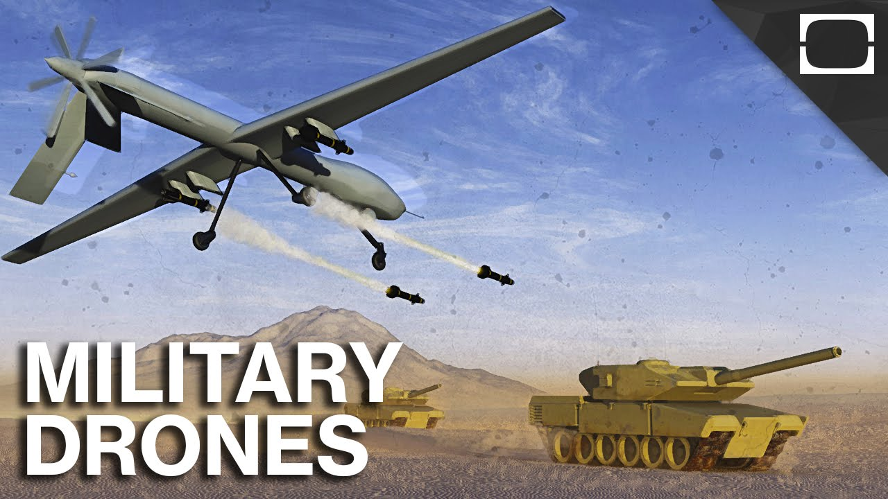

Drones Technology ✈

Pros and Cons of the Utilisation of Drones in the Military Field
Pros
It is easier to deal with terrorists with drones because it is less likely that human life will be taken for the pilot
Drones kill fewer citizens than any other military weapon
The us military pilots are very unlikely to die because they are not on board of the drone
Drone attacks are cheaper than plane or ground warfare
Drone warfare is totally legal when in the hand of the military
Drones let the military have to use less manpower to do these dangerous jobs
Drones have strict laws that make it safer for the public
Drone pilots are less likely to get post traumatic stress disorder due to not being in the vehicle
Most of the government supports drone warfare
Cons
Drones can be a cause for new terrorists
Sometimes people uninvolved get killed
Drones still kill a lode of civilians and traumatize more
They usually kill low threat targets
Some violate other countries laws
Drone operators have different kinds of stress
Most strikes are secret and without legal consent
Return to Home
Copyright © 2017 by Kevaughn Simms all rights reserved